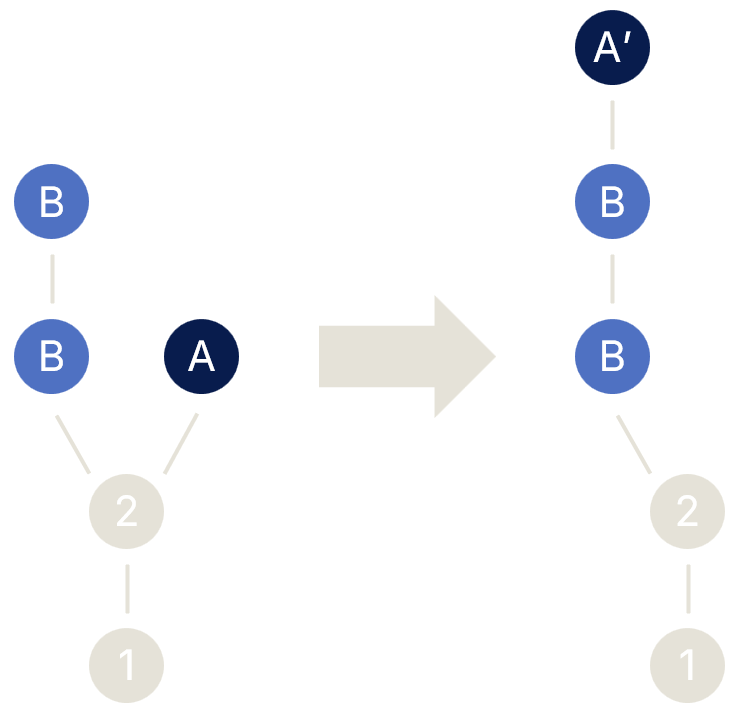
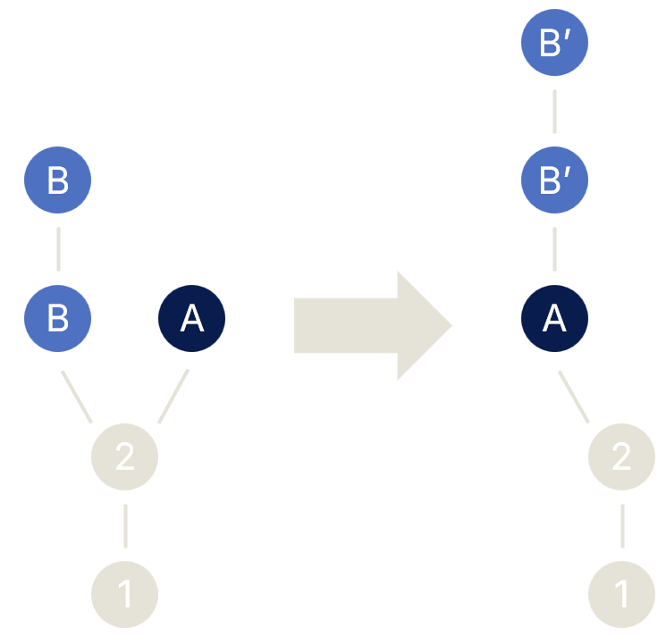
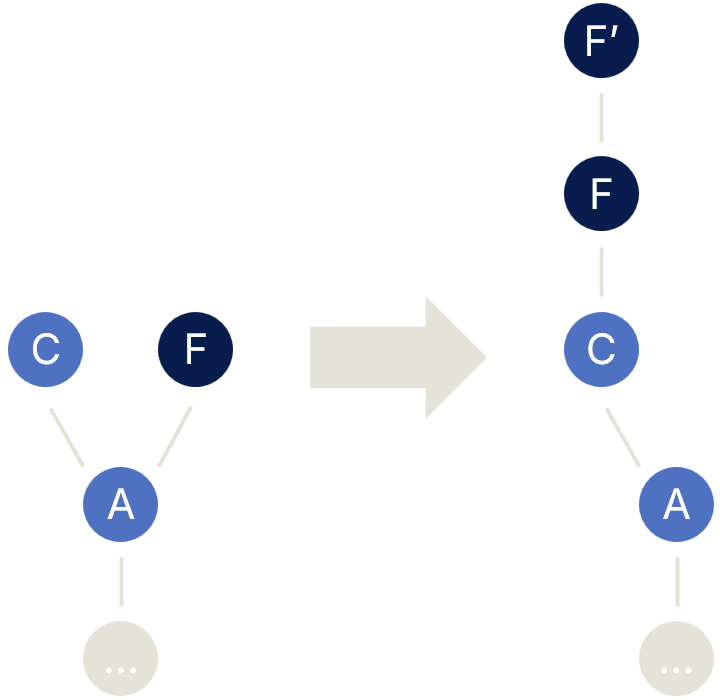
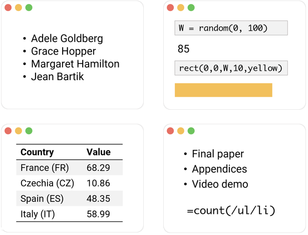
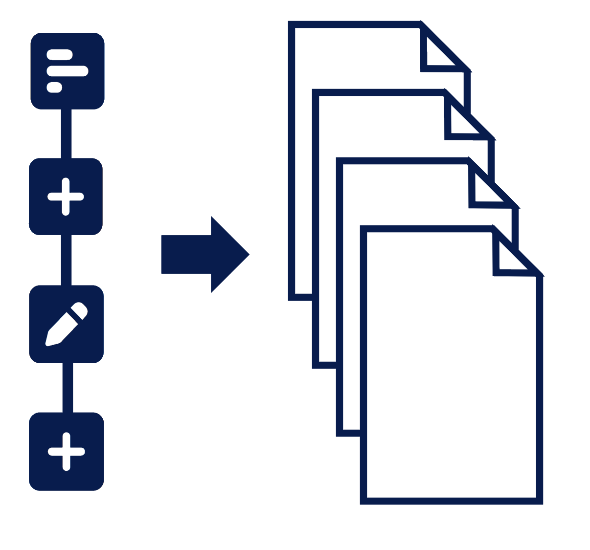

In the first demo, we create a list of messages with MixEd caPiTAliZaTIoN and normalise them by recording and replaying a sequence of edits that transform the text. To get started, click the play button. When the replay finishes, move to the next step using next. You can also use and to skip to the previous or next step and to replay a single event.
The demo already contains a record with the <ul> tag and hellos as its identifier.
We then add multiple <li> records as children of this record using
:cz=<li> (where cz is the name of the added record field) and set their
field greeting to a greeting in various languages.
The demo controls the actual Denicek, so you can also explore on your own! Use arrows to move around the document, type ? to open the command palette. You can use Alt+H to toggle history view and Alt+U to view document source. Use to reset the demo!
To fix the capitalisation, we will copy the greeting and transform the two copies.
We move to the first item in the record (en field) and copy the
value of its greeting field (the text) using Alt+C.
We then add the copy as another field named rest using
:rest=!v. Note that Denicek treats this as a special copy edit with
source (greeting) and target (rest).
To fix the capitalisation, we apply a number of built-in primitive transformations to the
two text fields. @take-first and @upper turn the first field
into capitalised first letter; @skip-first and @lower turn the
second field into lower-case rest of the greeting.
Denicek represents documents as sequences of edits. You can see the edits in the History table on the right. Use Alt+H to display or hide it. In the table, you can:
Now, we select the last 6 edits (watch the history table!)
that create the rest field,
copy the greeting and transform the fields and save them as
saved interactions using !s normalize.
Note that edits are saved in the document! You'll see a number of
append edits that add nodes to /saved-interactions/normalize
and you can see those if you view the source of the document. After the demo
finishes playing, hit the up arrow until you reach the root and then use
Alt+U.
To clean up the capitalisation of the remaining fields, we now go over the
individual record fields and apply our saved normalize operation
to each of the fields.
We use @normalize!, which lets us specify that the
currently selected document node should be used in place of
/hellos/en in the saved interactions.
The ordinary @normalize operation replays the original edits on the original targets.
(I'm aware German nouns should be capitalised. Sorry!)
As we will see in Chapter 3, there is a better way of doing this.
Denicek supports lists, which let us apply operations on all elements of the list at
the same time. In this demo, the <ul> element was a record.
After replaying the demo, you can undo the edits using Alt+Z and try on your own! Move around using keyboard arrows, and type @ to see the saved operation and apply it!
This demo was the "Hello world" of Denicek. You saw the basic idea: representing documents as sequences of edit operations. You saw that Denicek can save and replay past interactions to support programming by demonstration. The remaining chapters show that Denicek can do much more than that:
To create a todo list app, we first construct a user interface by adding
a heading and a <form> element with a text box and a button
for adding new items.
In Denicek, interactions with the document also create edits! This means that
when you enter a text in the text box and switch to another element to trigger
the changed event, Denicek adds an edit that modifies
the @value field of the input element. (Note that
field names starting with @ are treated as HTML attributes.)
You can see the edits in the document history. Modify the input value to see that it triggers new document edits!
We want to implement the add operation by demonstration, that is by showing Denicek how it is done and then replaying it when adding a new item.
We first create a new list with a single <li> element,
containing a label with a checkbox. The key thing is the next step —
we go to the source code of the form and copy the value in the text box
using Ctrl+C. We then go back to our list item and paste
the value as todo field using :todo=!v.
As you can see in the edit history, this creates a copy edit
from cmd/input/@value to items/#0/lbl/todo.
In other words, the edit does not depend on the specific value and so we
will be able to replay it!
Next, we select the edits that added the new list item, starting from the
addfield edit that adds the item itself, to the copy
edit that copies the item from the text box. We then use
!s add-item to save the edits in the document with a key add-item.
Note that saving interactions generates a sequence of edits that append
a serialised representation of the edits to the document at
/saved-interactions!
Now we want to tell Denicek to replay the interactions when the button is clicked.
We do this by adding @click handler to the button, pointing to the
saved interactions using their location inside the document, i.e.,
/saved-interactions/add-item. When we click the button and Denicek
replays the edits, it automatically generates a new ID for the newly added list
item (and uses it in subsequent edits).
We want to be able to mark items as done, so we revisit our list of todos
and transform the simple <li> list item.
We wrap the item in another <li>, change the tag of the
original item to <label>, add an
<input> and set its type to checkbox by adding a field using
:@type*=checkbox.
All the edits that we apply are applied to all elements of the list, which is
indicated by the * in their name.
If we add a new item using the saved interactions, you'll see that a new item is added with the label and checkbox! To do this, Denicek remembers when the interaction was recorded (the hash c45b2fc4 in the history panel).
When replaying edits, Denicek creates a history fork with the replayed edits, branching off from the point when they were recorded. The histories are then merged, which transforms the saved edits. In this case, the transformation adds the label and the done checkbox.

When you mark items as done (or not done) using the checkbox, this again creates new
edits that add or remove the @checked field of the checkbox.
In Denicek, merging is a central operation that is behind many of its capabilities. Programming by demonstration is one example. In chapter 3, we look at collaborative editing, which is another one.
This demo illustrates how Denicek supports collaborative document editing.
Say that Alice and Bob are organising a conference. They put together an initial
speaker list. Bob then refactors the <ul> list into a table,
while Alice adds another speaker. They then want to merge the changes!
To start, let's create a new document with some headings. To add the
list of speakers, we use :speakers=[ul]. This appends a new list as
a field named speakers. Denicek expects that child nodes of a list
have all the same structure (unlike records) and can apply operations to all
children of a list.
Individual speakers are added using :jennings=<li>. This is like
adding a (named) record field, but here, we are adding an (indexed) list item.
In Denicek, indices can be any identifiers. The speaker information is stored
in a field named details as a string.
Bob now takes the original speaker list and turns it into a table.
The first operation <table body>* wraps the whole
list inside a <table> record with a field named
body. The * symbol at the end indicates that
this is an operation changing the structure of the document —
any reference to the original node will be updated to refer to the wrapped node.
Bob then adds <thead> with a table header and changes the
<ul> to <tbody>. To transform the
list, he uses source view, which is toggled using Alt+U.
To split the speaker details into two columns, Bob copies the original table cell
(name) into a newly created cell (email). This is done
using operations that apply to all table rows (Alt+B to copy,
!v* to paste). He then applies primitive operations
@after-comma and @before-comma to transform the strings.
Meanwhile, Alice thinks of another speaker to invite and she
adds her to the original list of speakers. The newly added item has an
index goldberg and follows the same structure as all the
other items in the list.
Note that Denicek does not show field names in the default view, but you can see them (and verify that the structure of the items is the same) by switching to source view using Alt+U.
Alice has now added an extra speaker, while Bob has turned the list into a
table. How can they merge their changes? Merging in Denicek is not symmetric
(a bit like git rebase) and so there are two ways of
doing this...
After adding a speaker, Alice merges changes from Bob into her version of the document. Denicek transforms Bob's edits so that they can be applied after Alice's edits:

In this case, Bob's edits are unchanged, because Alice hasn't transformed the document structure. The refactoring automatically applies to the new speaker.
You can browse the linearised edit history in Denicek by viewing the edit history using Alt+H. Navigate through the history by clicking on the edit hash or using Ctrl+Down or Ctrl+Up to see the document at an earlier point in time.
Now, let's see what happens when Bob merges edits from Alice into his version of the document. This is trickier, because we want to apply an edit that adds a list item after refactoring the list into a table:
Here, Denicek transforms Alice's edit into a sequence of edits that add the
<li> item and apply the same transformation to this single item.
The edits that previously target all list elements using, for example, /speakers/body/*/email
now target specifically the new item using /speakers/body/#goldberg/email.
Denicek also supports formulas. In chapter 4, we will use them to calculate the budget for our conference.
Denicek documents can contain formulas similar to those in spreadsheets.
Formulas are just document nodes with a special tag name (x-formula).
They are created in the same way as other nodes and can refer to other elements
in the document using selectors such as /speakers.
To calculate our sample conference budget, we add a budget section to our document.
The travel per speaker is a numerical field. Number of speakers is computed
using a formula count(/speakers), which counts the number of
elements of a list and the total cost is the cost multiplied by the count.
Denicek does not (yet?) have a nice formula editor, so we need to manually construct
the underlying representation using references to other document nodes and
special $builtins operation names:
<x-formula> <x-reference id="op">/$builtins/mul</x-reference> <x-reference id="left">/budget/travel/value</x-reference> <x-reference id="right">/budget/count/value</x-reference> </x-formula>
Locate the formula in the document and use Alt+U to see the source code!
You can evaluate formulas using Alt+E. Formula evaluation uses the same mechanism as everything else in Denicek — edit history!
When you evaluate a formula, the evaluation engine generates edits that
attach the result to the formula node. This is done step-by-step and so, for example,
evaluating count(/speakers) first replaces the reference with the
target element node using a copy edit and then replaces the formula with
the result. If you know programming language theory, this may remind you of
small-step operational semantics.
The evaluated edits have dashed borders in the edit history. They are special in that Denicek always keeps them on top of the history. If we make an edit, like changing the travel per speaker to €2000, Denicek will add the new edit just before evaluated edits and use merge to reconcile the evaluated edits with the new manual edit. If the edits conflict, the evaluated edits are removed.
After running the demo, there are only 5 evaluated edits. Changing the travel per speaker invalidated the total costs, but not the number of speakers. This way, Denicek automatically supports incremental recomputation! Hit Alt+E to compute the new total cost.
When evaluating formulas, Denicek wraps the original x-formula element in an
element named x-evaluated with two fields. The formula field stores the original
formula and result contains the result. This is not displayed in the
final document, but you can see it in the source view by using Alt+U.
The fact that a Denicek document node representing an (evaluated) formula still contains the original formula makes it easy to find out what other nodes in the document the result depends on. This works even for transitive references — because formulas are evaluated step-by-step, the formula for total cost contains a copy of the formula that counted the number of speakers.
You can see what an evaluated value depends on by navigating to the value in the document and toggling the provenance view using Alt+P.
Formula evaluation also works well with concurrent document editing. In chapter 3, we looked at a scenario where Alice adds a new speaker, while Bob refactors the speaker list into a table.
This step shows what happens when we merge Alice's changes into the document. Edits that add a speaker conflict with the edits that count the number of speakers and so those evaluated edits are removed. Consequently, the edits that compute the total are also removed. The only three independent evaluated edits are those that copy the value €2000 into the first argument of the multiplication.
Play the demo to see how the individual edits affect the document. You can also reevaluate the document using Alt+E.
A more interesting merging scenario is when we take the document with the newly added budget calculation and merge it with Bob's changes that transform the list of speakers into a table.
Denicek supports this scenario too. It knows that the wraprec operation,
applied to the list of speakers, wrapped it as a field named body of the
newly created <table> element. Because this is an edit that
updates references in the document (solid border in edit history view), Denicek
automatically transforms the reference /speakers to
/speakers/body and the formula continues working after the refactoring!
If you play the demo, it jumps to the relevant edit and you can see the formula for number of speakers changing.
You've already seen programming by demonstration in chapter 2 and this demo showed formulas, incremental recomputation and handling of schema change. The next chapter combines formulas with programming by demonstration to build a simple counter.
This demo combines two programming experiences supported by Denicek. We use programming by demonstration, implemented by saving and replaying edits, with the support for formulas embedded in the document to implement a counter.
In the first step, we create the user interface by adding the elements we will
need — two buttons for decrementing and incrementing the counter and a
label with the count itself. The value is stored at /count/value.
To explore the structure, use Alt+U to view the source code
and Alt+H to see the edits.
To make the demo nicer, there is some pre-defined CSS, which is not inside
the Denicek document. In theory, we could add <style> tags to the document
too!
Now we want to apply the edits that increment the count. The way we do this
is that we wrap the current value at /count/value inside a formula
that adds 1 to the value. We apply the edits on the current value, that is 0,
but they are generic and can be applied to any other value or a formula.
The formula node has a tag <x-formula> and has the original
value as the left field, the value 1 as the right field
and a reference to the plus operator as the op field.
You can see this using Alt+U:
<x-formula> <x-prim-num id="left">0</x-prim-num> <x-prim-num id="right">1</x-prim-num> <x-reference id="op">/$builtins/plus</x-reference> </x-formula>
After constructing the formula, we evaluate it using Alt+E and the document displays the new count as 1. In reality, an evaluated formula remains hidden behind the number. You can un-evaluate it by undoing the last two edits by hitting Alt+Z twice.
When the user clicks increment, we want to replay the last three edits, which wrap the current value with a formula that adds 1 to the current value.
To do this, we first undo the evaluation (only to see the structure better), we then
select the last three edits (wraprec, addfld and addfld)
and save them using the !s inc command. We then point the @click
field of the button to the edits stored at /saved-interactions/inc.
Click the button a few times to see the code in action! In the interactive mode, Denicek automatically evaluates the formulas after a click and so you won't see the underlying formulas.
You may be wondering how inefficient this is. Currently, the formula is fully re-evaluated on each click, so it certainly is not very efficient! The code could probably be optimised (to avoid re-evaluating previously evaluated parts), but performance is admittedly not a concern of the demo.
To support the decrement button, we perform the same steps as when implementing the increment operation. First, we wrap the existing value in a formula that subtracts one:
<x-formula> <x-formula id="left"> (...) </x-formula> <x-prim-num id="right">1</x-prim-num> <x-reference id="op">/$builtins/minus</x-reference> </x-formula>
We then save the edits that perform the wrapping as /saved-interactions/dec
and add a reference to the saved edits as the @click field of the button.
And now, we have a working counter, (almost) without writing a single line of code!
In this demo, we did not need to work with the history in any interesting way. As you'll see in the next chapter, merging of histories can be very useful when working with formulas...
When you need to write two similar computations, it is very tempting to use copy & paste and then modify the copy. Everyone knows this is a bad idea — if you then need to make a change, you have to modify all copies and it is easy to miss one.
Denicek keeps track of copying in the document, and so it is possible to copy parts of a document, but then make changes to all of them. Doing this relies on the ability to merge edits and move through the edit history.
In this demo, we use the read-csv formula in Denicek to load a CSV into
a table. We load two data tables and want to do the same simple calculation over both tables.
In the first step, we load the data and sum the values in the total column.
Note that the read-csv operation returns a document part, which is
a nested record representing a table, containing a list of rows, which are, again, just
nested records (with fields matching column names). The additional nesting makes it possible
to style the table nicely, but we have to access the rows using result/table/data/* and
the values in each row using total/value.
When we evaluate the two sum formulas, we get the correct totals. You can try
this on your own using Alt+E. If you view the edit history using
Alt+H, you'll see the evaluated edits (with dashed borders) and you
can retrace how the evaluation proceeds using Ctrl+
and Ctrl+.
We now construct a slightly more complex formula. We want to count the average deaths per year and round the result, but get things the wrong way round calculating round(count/sum, 2) rather than round(sum/count, 2).
We do not notice our error and continue by copying the incorrect formula. To calculate the
average for rail accidents, we replace the two selectors in the formula, changing the
source from the avia table to the rail table. The structure
of the formula remains unchanged and so both formulas now divide the two numbers in an
incorrect way.
At this point, we notice our error — perhaps because the two numbers we get,
0.7 and 0.28 seem wrong — and want to correct the formulas.
The key fact that will make this possible is that the second formula is a copy of the
first and Denicek keeps track of this information. If you view the edit history using
Alt+H, you'll see that the edit number 41 (you'll need to click
"+68 more operations" to expand the history) copied the node /analysis/aavia/f
into /analysis/arail/f.
There is a lot going on in this step, so you may be better off replaying the interactions in this demo one step at the time using the button!
First, we remove all the evaluated edits using Alt+T so that we can see the formulas and understand what went wrong. We also open the history panel using Alt+H.
Now the key trick is to navigate through the edit history to a point
before the copy edit that duplicated the incorrect formula.
Then we can create a fork in the edit history using Alt+F.
Denicek remembers the original branch with further edits, but lets us apply more
edits on top of the earlier point in history.
Once we are in a new branch of edits, we can apply the necessary fix. We simply swap
the left and right arguments of the division. This is done
using three updid edits (by first renaming right to tmp).
Now that we fixed the original formula, Denicek can automatically propagate the fix to the copy. The trick is to merge the edits made in the new branch with the original branch. This propagates the fix (F) through the copy edit (C), resulting in a new copy of the fix (F') that is applied to the copy of the formula:

You can easily do this yourself! Use Alt+U to hide the source
code and then use Alt+M to merge the edits with the original
branch. You'll see six updid edits renaming the fields for both
aavia and arail formulas. Then use Alt+E
to evaluate the formulas and see the correct results!
The demos in the previous chapters were using Denicek abstractions directly. While the interface enables a lot of interesting features, it is not very user-friendly. But Denicek was intended as a computational substrate, i.e., an underlying representation for more interesting programming systems.
To show that Denicek can really work this way, we also built Datnicek, a user-friendly programming system for data science. Datnicek supports:
All of these are built on top of Denicek, using the history of edits and the document structure.
This demo illustrates some of the capabilities of Denicek. Again, it runs the real system and so you can play around, this time in a more user-friendly environment!
Code cells in Datnicek are represented as records with fields for individual formulas.
Formulas use the same representation we saw earlier — a formula is a <x-formula>
document node and evaluating it wraps the formula with <x-evaluated> and adds the
result field containing the evaluated result. You can see this by switching to the source
view using Alt+U.
To show that Denicek can be used as the basis for interesting user experiences, Datnicek uses it to build an interactive data cleaning environment. Here, we use it to clean the data on air traffic accidents from Eurostat.
The grid cell shows the data in a spreadsheet-like view. When you click on a cell or a header and edit the value, the tool suggests possible edits to apply to all rows. We use, for example:
Datnicek stores information about the interactively applied
transformations in two ways. First, they are stored as normal edit history
and you can see them in the history panel, which you can open using Alt+H.
The panel shows edits for each grid cell individually. However, the edits are
also stored in the document itself. If you view the source using
Alt+U, you can see them in the source code for the
grid cell under <edits> (towards the end, after the data table).
A user experience that some interactive notebook systems support is turning the recorded edits into code. Datnicek can do this too, using the Insert as code cell action in the grid cell. The action generates code that corresponds to the edits, which makes it easy to write reusable data cleanup code.
In the demo, we turn the interactive edits into code and then remove the grid
cell to save space on the screen. We then add the sum() call to compute
the total number of accidents per year.
In the final step, we add a simple data visualisation using the editor in the code cell.
You can do this yourself by choosing from the operations offered by the code editor.
After clicking "+", we select vis to create a visualisation,
bar for a bar chart, and choose data=aviaTotal as the data source.
Datnicek notebooks show a different aspect of Denicek. Rather than focusing on specific user experiences, it illustrates the idea that Denicek works as a computational substrate. It can be used as a basis for different kinds of programming systems. The notebook system uses:
All of these features were developed in specialised data science tools; implementing them is significantly easier on top of the Denicek substrate.
The idea behind Denicek is that a suitable underlying computational substrate can make it easier to support programming experiences that future programming environments need. The key operations provided by the Denicek substrate are merging of edit histories and conflict detection. Those are not used only for collaborative editing, but are behind the implementation of many other programming experiences, illustrated by the demos in this essay:

Figure 2. Unreasonable effectiveness of merging of edit histories.
There are many interesting directions to explore that Denicek does not address. First, there are two ways in which computations are expressed in Denicek. They can be written as formulas, or expressed by demonstration. An interesting problem is how to unify the two. Second, the underlying merging mechanism is based on operational transform (OT), which is difficult to implement correctly and the experience of building Denicek confirms that! It would be interesting to see if an alternative design, for example based on CRDTs, makes this easier; see below for some experimental work. Third, there are also various interesting questions related to checking of the document structure. For example, when creating a new list item, the item is not well-typed until it is fully created, so a type system for Denicek would need to account for this.
If any of these problems interest you and you want to collaborate, I'd love to hear from you: tomas@tomasp.net!
Denicek: Computational substrate for document-oriented end-user programming
Tomas Petricek and Jonathan Edwards
tomas@tomasp.net | @tomasp.net

Figure 1. A program is a sequence of edits that can be replayed to construct a document.
To make programming easier, researchers came up with many appealing programming experiences. In programming by demonstration, we create programs by showing what we want to achieve using specific values. In concrete programming, we reuse logic by copying and modifying parts of programs. We also need support for collaborative editing, on-demand recomputation when parts of a program change, and automatic updating of code when a relevant schema changes.
Building a programming system that supports all of these at the same time is hard. Denicek is a computational substrate that represents programs as sequences of document edits. It provides primitive operations for applying edits, merging edits, and detecting conflicts. This simple structure makes it easy to implement the above programming experiences.
This interactive essay demonstrates two programming systems built on top of Denicek. It walks you through the solutions to a couple of standard challenge problems like building a counter, todo list, and managing a conference. The demos use a real Denicek implementation, so you can also explore on your own!
How exactly does it work? Check out our UIST 2025 paper for more details!